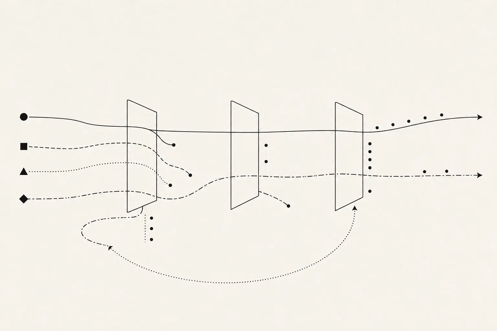

{kind=link}
Use the same base model, training budget, and evaluation protocol for ordinary LLM-generated data and data improved through symbolic checks and counterexamples. Report data preparation and teacher-model costs separately. Include an untrained baseline and a prompt-only control.
Back to home
Engineering method
Start with what works. Test the rest.
I use AI agents to help build systems. I decide what the system needs to do, look for methods that have worked before, and choose how to represent and check the problem. I remain responsible for deciding whether the result meets those requirements.
My research also uses neuro-symbolic workflows: LLMs help me formulate questions and hypotheses, while explicit models and independent checks make those ideas testable. I guide the process and build tools to preserve its evidence.
Research method
Explore ideas, then check them.
I use LLMs to propose, predict, analyze, and recombine ideas. They help me arrive at research questions, competing hypotheses, and useful abstractions. Deterministic tools supply replayable checks of the mathematical and logical claims that emerge.

LLMs explore candidate spaces
A space is a set of possible candidates for a question. LLMs are neural models that propose, predict, analyze, and recombine candidates across many such spaces. They can transfer a useful structure between problems or suggest a new representation after a failed check.
A search can be exhaustive within a finite, declared space when every candidate is enumerated and checked. Other searches are partial or heuristic. I distinguish complete coverage from sampled exploration: both can produce valuable witnesses, counterexamples, and new questions, but their conclusions have different scopes.
- Hypothesis spaces
- Possible explanations and scientific models. Predictions and attempts at falsification help distinguish them using empirical observations.
- Witness spaces
- Candidate objects that could demonstrate a claim, such as a satisfying assignment, construction, or certificate. A verifier checks whether the proposed object satisfies the specified relation.
- Proof spaces
- Possible arguments, lemmas, and proof constructions. An LLM may propose the proof; a tool such as Lean checks the formal result under its stated assumptions.
- Design and abstraction spaces
- Alternative algorithms, representations, and decompositions. Invariant checks, equivalence checks, and experiments assess the properties that matter for the problem.
An interactive analogy
The proposer searches. The checker decides.
Imagine an LLM proposing the trajectory of a red dot through a maze. The dot leaves a red trail as the proposal is inspected. The checker establishes whether its start, moves, and destination satisfy the rules. Only an accepted trajectory turns green.
Example proposals are ready.
Enable JavaScript to animate and check a trajectory.
This demo replays example proposals; it does not call a live LLM. The deterministic checker runs in your browser. In exploration mode, the dot marks the search cursor rather than an adjacent-step route. Reduced-motion preferences are respected.
A finite state space can permit exhaustive exploration, as this maze demonstrates. An unbounded maze may still have a finite solution trajectory that a checker can verify. A partial search that finds no solution does not, by itself, establish that no solution exists.
First, check the rules
Agentic behavior is a trajectory of actions, observations, and consequences. Reaching a goal does not excuse a forbidden intermediate action. A constitution can define hard constraints that every accepted trajectory must satisfy, including permissions and evidence requirements.
Then compare the options
Accepted trajectories can still differ in cost, usefulness, and effects on people. In this maze, the legal detour costs more moves. In a real system, preferences and heuristics guide search among admissible options. Mathematical optimality requires a specified objective and sufficient evidence about the alternatives; a passing check alone does not establish it.
From maze trajectories to alignment
The maze walls stand for specified constraints; the goal and route costs stand for objectives and preferences. Neuro-symbolic alignment combines learning better proposals with explicit checks on what a system may do. Human values determine the requirements, and the adequacy of that specification remains open to scrutiny.
- Training shapes proposals
- Use a constitution and checked examples to reward useful, permitted trajectories, honest uncertainty, and justified stopping. Counterexamples can reveal when a reward favors a shortcut through a wall.
- Monitor models raise concerns
- A learned monitor can analyze proposed actions, observed effects, and longer histories for anomalies or emerging failure patterns. Its flags can trigger a pause or review under a defined policy. Its reassurance is not a proof of safety.
- Checkers enforce specified boundaries
- Before a consequential action, check the relevant permissions, scope, and other encoded obligations. An action is accepted because those checks pass. Suggestions from another agent do not create new authority.
- Evidence improves the next iteration
- Preserve failures and their causes in Research Kernel. Revise the specification, training examples, or enforcement boundary as appropriate, then evaluate again. Measure unsafe proposals and prevented effects separately.
Can monitors prevent incidents?
They can help, but prevention is not established by retrospective detection. OpenAI's July 2026 incident account reports earlier warning signs and monitoring improvements made with hindsight. The METR and Redwood investigation describes limitations of AI-assisted analysis. Detection, timely intervention, and effective containment each need evidence.
What a symbolic incident model adds
Represent authority, task scope, actions, and observed effects as states and transitions. A forbidden transition becomes a counterexample that can inform a regression check. Prevention still requires a faithful abstraction and enforcement over every relevant action channel: a checker cannot rule out effects its model or observations omit.
- 1. Develop the candidates
I bring the objective, domain context, and judgment. LLMs help explore explanations, alternative representations, predictions, and edge cases. I select questions that can be meaningfully tested against prior work and evidence.
- 2. Check and challenge
I choose representations and tools suited to the claim: Lean for checked proofs, Z3 for encoded constraints, Tau for formal specifications and logical reasoning, and other checkers as needed. In empirical work, I seek observations and experiments that could falsify the hypothesis.
- 3. Preserve what the evidence supports
My custom Research Kernel Protocol MCP connects hypotheses with sources, artifacts, dependencies, and refutation attempts. I preserve failures, narrow conclusions to what was checked, and use the result to guide the next investigation.
My role and my tools
Today I guide the research and judge the scope of a conclusion. Alongside Lean, Z3, and Tau, I use LEAP to investigate abstractions, my Research Kernel Protocol MCP to organize the investigation, and PopperPad to preserve hypotheses and falsification evidence.
What the checks establish
In mathematics, evidence quality comes from the proof and the checker, under stated definitions and assumptions. Solvers establish results about the constraints they receive. Research Kernel records evidence and enforces promotion requirements; the attached check or experiment supplies the substantive support.

Science: survival of the strongest hypothesis
My scientific method is inspired by Karl Popper: seek demanding attempts to falsify competing hypotheses. The hypothesis that best survives those tests earns the strongest provisional support. A useful test must be capable of exposing a failure; repeated easy tests or agreement among models add little.
Successful predictions count as evidence
A scientific model earns support when it makes a prediction and the predicted outcome is independently observed. Evidence is stronger when the prediction is specific, recorded before the outcome, and distinguishes that scientific model from plausible alternatives. LLMs help develop and analyze these models; the observations provide the empirical evidence. I weigh predictive success alongside attempts at falsification.
Support remains provisional: new evidence can overturn a conclusion, several hypotheses may remain viable, and a test may be flawed. I preserve counterevidence and unresolved alternatives so later work can challenge the result.
This public overview shows the principles, responsibilities, and evidence standards. Detailed prompts, orchestration settings, training recipes, and selection heuristics remain private.
Current research question
Can checked examples improve learned behavior?
At a fixed training budget, does symbolically checked, counterexample-directed training improve constitutional behavior compared with ordinary LLM-generated training data?
My Market for Behaviors essay motivates the incentive question: what behavior does a training process actually reward? My formal methods work supplies a way to express and check some of those requirements before expensive training.
The proposed loop is: specify a behavioral constitution, generate candidate examples, check the modeled obligations, use counterexamples to revise the training set, train, and evaluate on unseen scenario families. The constitution includes useful task completion alongside permissions, evidence, uncertainty, and appropriate stopping.
Track rule violations, useful task completion, unsupported claims, appropriate uncertainty, unnecessary refusals, and compute cost. Measure the learned policy's proposals separately from runtime blocking so enforcement is not mistaken for improved training. Keep evaluation labels independently reviewed and reserve unseen scenario families for the final comparison.
The initial demonstrator uses a finite behavior contract and a tabular learner to inspect reward choices. LLM assistance currently operates in the design loop. Neural weight updates and a demonstrated improvement on held-out neural-model behavior remain future milestones.
Constitutional AI informs principle-guided feedback; reward machines inform explicit reward structure; rule-based rewards inform rule-guided feedback. These are starting points for the experiment, not evidence that this particular method succeeds.
The distinction
Think it through before you build.
Before generating code, I describe the system, its expected behavior, and the evidence I will need to accept the implementation.
I can automate much of the implementation once I have answered the basic questions: what is the system for, which rules must always hold, how should I represent them, and which independent checks will catch mistakes?
| Layer | Question |
|---|---|
| Semantics | What must this system actually do for a real user? |
| Practice | What has already been shown to work well? |
| Architecture | Which decomposition makes correctness and change manageable? |
| Verification | What independent evidence can tell right from wrong? |
| Acceptance | What evidence is sufficient for this specific claim? |
Decision loop
How I make technical decisions.
I start with methods that have worked before. If I try something new, I test whether it helps.
- 1. Understand the problem
Start with what the product means in practice: user expectations, economic behavior, failure modes, operational constraints, and the domain experience that a specification may omit. A DEX, for example, is not merely swap math. It includes quoting, slippage, approvals, transaction state, failure recovery, liquidity behavior, routing, wallet state, gas, and UX that makes those states intelligible.
- 2. Don't reinvent the wheel
Before inventing a method, look for mature architecture, testing, UX, security, and verification practice. Ask what experienced practitioners already know, which failure modes motivated the practice, and whether it actually applies to this problem.
- 3. Choose the right abstraction
Represent the risky part in the form that makes its behavior easiest to reason about: equations for deterministic transformations, finite-state machines for lifecycle logic, invariants for safety properties, schemas for structured boundaries, or another model when it fits better.
- 4. Choose the cheapest sufficient evidence
Formal proof is not automatically better than testing, and testing is not automatically sufficient. I choose among exhaustive enumeration, model checking, theorem proving, differential oracles, property tests, boundary-value analysis, integration tests, replay, and other methods according to the claim and the risk.
- 5. Build independent checks
Where possible, expected behavior is derived through a different path than the implementation. A spreadsheet can act as a differential oracle for deterministic financial logic; a finite-state model can expose invalid transitions; a brute-force reference can audit an optimized algorithm. Agreement is more useful when the failure modes are not perfectly correlated.
- 6. When practice is missing, run the experiment
If no reliable best practice exists, or competing practices make incompatible claims, convert the uncertainty into a comparison: define success criteria, build alternatives, construct adversarial cases, measure what works and what fails, preserve negative results, and narrow the claim to the evidence.
- 7. Keep what holds up
A successful experiment becomes a reusable local practice only after its assumptions and failure boundaries are understood. I keep what helps me make better decisions next time.
Reviewing agent-written code
Check what the code does.
For a deterministic pure core, I often do not need to establish trust by reading every generated line. I can make the behavioral contract smaller than the implementation and verify the implementation against it.
If an algorithm implements a deterministic function, the useful question is whether the implementation agrees with the independently derived expected function on the cases that matter, not whether the source merely looks reasonable.
domain meaning
↓
formal / behavioral model
↓
┌──────────────┬────────────────┐
│ agent-built │ independent │
│ implementation│ oracle/model │
└──────┬───────┴───────┬────────┘
└────── compare ─┘
↓
invariant checks
↓
boundary / shell tests
↓
bounded claim
Examples
Different problems deserve different workflows.
Functional core, imperative shell
Put deterministic state evolution in a pure core where behavior can be exhaustively tested, modeled, or proved. Keep external effects in a narrow shell and cover that boundary with integration, replay, idempotency, and failure tests.
Finite-state review
When correctness depends on permitted transitions, inspect the state set and transition relation rather than mentally simulating a large codebase. The model makes impossible and missing transitions visible.
Differential financial audit
For deterministic algorithms, independently encode the expected equations in a spreadsheet or reference model and compare implementation outputs at discriminating inputs. The oracle is useful precisely because it is derived through a different path.
Boundary value analysis
Test around meaningful discontinuities, limits, thresholds, empty/full states, minimums, maximums, and just-inside/just-outside values where plausible implementations most often diverge.
Arrange, Act, Assert
Keep the behavioral claim visible in each test: establish the precondition, perform one meaningful action, and assert the property that should follow. Structure helps prevent generated tests from becoming opaque implementation mirrors.
When there is no best practice
Make competing approaches falsifiable. Define what success means, build a bounded comparison, record failures as well as wins, and turn the surviving result into a reusable practice with explicit scope rather than a universal rule.
Best practice as a hypothesis
Good practice should stand up to testing.
I ask what makes a practice worth following: which problems has it prevented, under what conditions, and at what cost? When those conditions change, I test it again.
I also learn from what goes wrong. Recording how an approach failed helps me avoid repeating the same mistake.
Use mature practice when its assumptions match the problem.
Modify practice when the environment changes, while preserving the reason it existed.
Turn competing recommendations into a bounded empirical or formal comparison.
Experiment, preserve failures, and promote only what the evidence supports.
Human + agents
I can delegate the task, but I still answer for it.
Agents help me research, build, refactor, generate test cases, and explore possible designs. I record what I asked them to do, which methods and models I chose, how I checked the results, and what I personally reviewed.
I disclose how AI was used and explain why I accepted the result. The design and the checks matter as much as the code.
Architecture is choosing the right abstraction and the right evidence before the code exists.
Operating method
Evidence
Put the method to the test.
The capability ledger maps these ideas to bounded work samples. The evaluation page points to repositories, tests, proofs, replay commands, and explicit limitations.